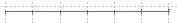
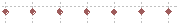
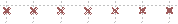
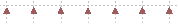
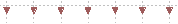
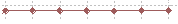
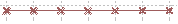
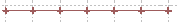
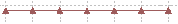
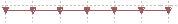

The following features are about features supported by a one-dimensional curve plot, for example the reduction result plot or the analysis result plot. To learn about the meaning of the 1D results, please read Section 3.5.2, “Integrated Counts” and Section 3.5.3, “Scan Data”.
To zoom in certain region of the 1D plot, simply push down the left mouse button and draw a rectilinear box from top left to bottom right on that region. You can use this action to zoom in up to possible zooming levels.
To zoom out to the original level, push down the left mouse button and move
it up or left. Another way to zoom out is to click on the  button at the top left corner of the plot.
button at the top left corner of the plot.
Single click on a point in the curve, it will provide a crossing at the point in blue colour. The crossing clearly tells the positions of the point. The detail values of the position will also show up in the status bar at the bottom of the plot.
Click on the  button to switch the vertical coordinate axis between logarithm axis
and common axis. Figure 3.26, “Logarithm Axis” shows an example with logarithm vertical
axis in the plot.
button to switch the vertical coordinate axis between logarithm axis
and common axis. Figure 3.26, “Logarithm Axis” shows an example with logarithm vertical
axis in the plot.
Click on the  button to copy the current plot image into system clipboard. You can
paste the image into common Windows imaging application such as
MSPaint and MSOffice applications.
button to copy the current plot image into system clipboard. You can
paste the image into common Windows imaging application such as
MSPaint and MSOffice applications.
Click on the  button to save the current plot to an image file in your file system.
A Save As window will pop up for you to pick the folder and file name
for the image file. It supports three image file formats: BMP,
JPEG and PNG.
button to save the current plot to an image file in your file system.
A Save As window will pop up for you to pick the folder and file name
for the image file. It supports three image file formats: BMP,
JPEG and PNG.

Click on the Data item in the plot menu bar, a Data Control Block will show up in the left side of the plot. For example, Figure 3.27, “Data Control” shows the block of the integration result plot.
The following features are supported in the Data Control Block.
The first column of the data control area is visibility control. Select or deselect the check box in that column to show or hide the data.
The one-dimensional curve data is called Pattern in Gumtree
plotting space. Some time, the data fed to the plot can be a group of such one-dimensional
data, which we call PatternSet. By default, all
Patterns under the PatternSet will show up in
the Visibility Control Area. Click on the button  to fold the PatternSet so that it hides the
Patterns within it. Click it again to unfold it. Deselect the
visibility checkbox of the PatternSet will set all
Patterns in it invisible.
to fold the PatternSet so that it hides the
Patterns within it. Click it again to unfold it. Deselect the
visibility checkbox of the PatternSet will set all
Patterns in it invisible.
Use the Colour column to change the colour of the curve shows in the plot. By default, the colors of the curve data are selected automatically from a rainbow colour series to be different from each other. You can change the colour of a single curve by clicking on the colour label in the Colour column. A Colour Selection Panel window will show up as in Figure 3.28, “Colour Selection Panel”. You can either choose a basic colour or click on the Define Custom Colors to generate a customised color. Click on OK to confirm the change.
By default, the title in the 1D plot uses the title of the data that put into the plot widget. So that you can control the title of the plot by changing the title of the data. To change the title, simply click on the current title of the data in the Title column, then type in a new text.

You can change the marker shape of each curve in the plot. To change the marker shape, simply click on the drop down list in the Marker column and select one from the available marker shapes. Table 3.1, “Available Marker Shapes” shows the available marker shapes and their names.
Table 3.1. Available Marker Shapes
| Name | Icon | Style |
| Line Only | - |  |
| Diamond | * |  |
| Diagonal Cross | x |  |
| Regular Cross | + | |
| Up Triangle | ^ |  |
| Down Triangle | v |  |
| Line Diamond | -* |  |
| Line Diagonal Cross | -x |  |
| Line Regular Cross | -+ |  |
| Line Up Triangle | -^ |  |
| Line Down Triangle | -v |  |
To link the data with the algorithm means when the algorithm is processed again, new result data will overwrite the current data. This makes the plot updates automatically to the most recent result. By default this feature is enabled. To disable it, simply deselect the checkbox in the Linked column.
The metadata columns show the plot data information.
Reference column shows the ID of the algorithm that generates this plot.
Data type column shows the type of the data, such as Pattern or PatternSet.
Status column shows the status of the algorithm that generates this plot, for example, InProgress, Done or Error.
Timestamps column shows the time stamp of this plot data generation.